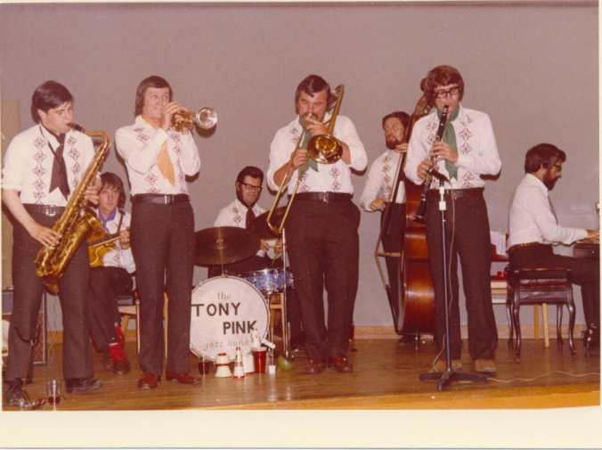
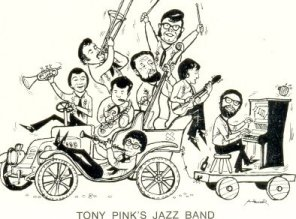
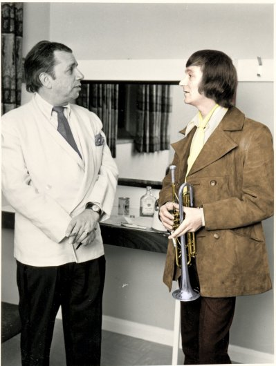
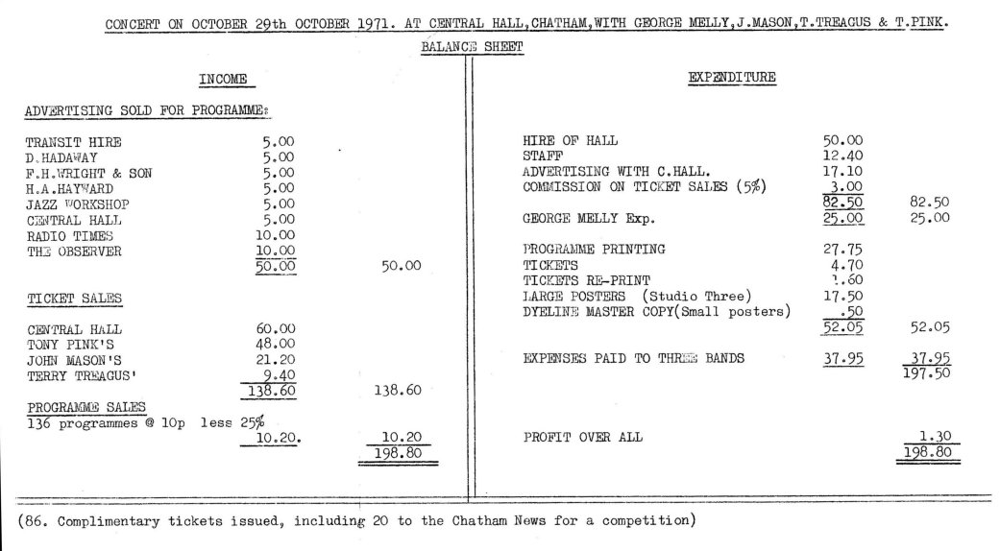
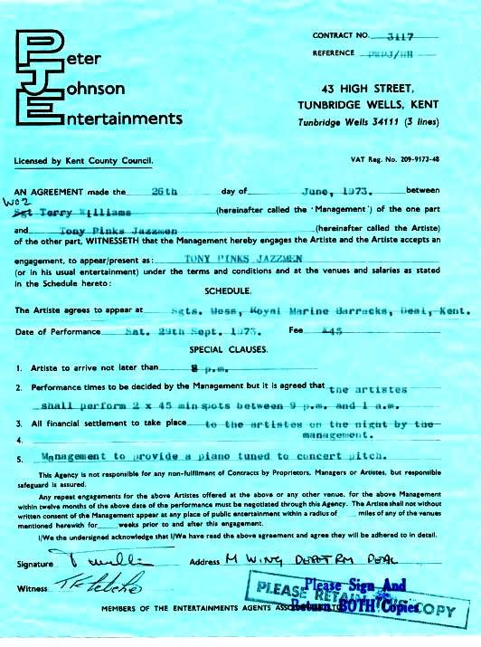

| Tony Pink Jazz Band | ||
|---|---|---|
|  |
Wainscott WMC
|
| Arthur Prosser's Cartoon | |
|---|---|
|  |
KEN MULLINS, ACE REPORTERKen Mullins used to write a weekly column in the Kent Evening Post. He seemed to favour our band a great deal and chose to write the most favourable columns about us. A colleague of his, Arthur Prosser drew strip stories for the KM and had produced a book about the history of the Medway. He also like a bit of jazz, and I suppose on a slack day decided to draw us. We used this as our logo from then on in..... Thanks Arthur. A real touch of genius! |
| George Melly Concerts | |
|---|---|
|  |
GEORGE MELLY with Tony PinkThe gamble that paid off was the one taken by Tony Pink and his Jazzmen when the Strood musicians booked the Central Hall, Chatham, for a jazz show last Friday.They featured not only their own distinctive style, but also the music of John Mason's Jazzmen, Terry Treagus Jazz Sounds and the jazz singer George Melly, who is pictured here with trumpeter Tony Pink. More than 600 people turned up for the concert which provided a tremendous boost for jazz in the Medway area. "We didn't make a lot of money" said Tony afterwards "but the reception was great and I am now booking the Central Hall for a similar show next Autumn." A week earlier the Strood jazzmen did extremely well at the London's Victoria Palace. [Ken Mullins, Evening Post] c. Nov.1971 [picture by Kent Messenger & coloured by Daniel Rushton] |
| Concert Accounts | |
|---|---|
|  |
Alan Robinson unearthed this document in his loft 39 years later! |
| Getting Paid for Blowing! | |
|---|---|
|  |
Royal Marine's Dinner_DanceOne thing that never ceased to amaze me:- The Royal Marine Band booked us every year for their Annual Dinner and Dance. I told myself it couldn't be a flook, they had us back year after year. The same with the 100 Club in Oxford Street. We played there backing Humphrey Lyttleton, and were booked back there several times as a support group to various well known bands such as Terry Lightfoot, Acker Bilk and the Avon Cities Jazz Bands.There was something magical about playing at the 100 Club. It was like the Mecca for English Jazz, and to appear there was the pinnacle of our career. Even more than that, our bass player, Dave Veryard who was at the same time playing with the Kent Youth Orchestra would play the 100 Club with us until 1.30 am on a Saturday night, come home about 3.00 in the morning and have to be back at the Royal Festival Hall for a Youth Concert the same afternoon! About the same time we were offered a season at the Victoria Palace Theatre Having appeared there as an "opener" for a charity show for "OLD BEN" The News Trade's Charity with Leslie Crowther as top of the bill. We had to decline as we were all in full time employment and only played for the fun of it basically. |